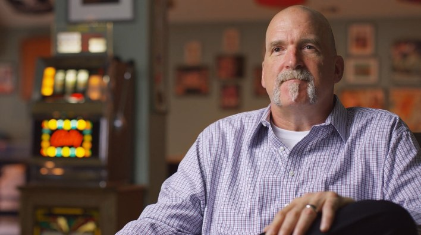
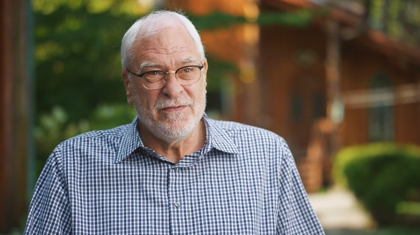
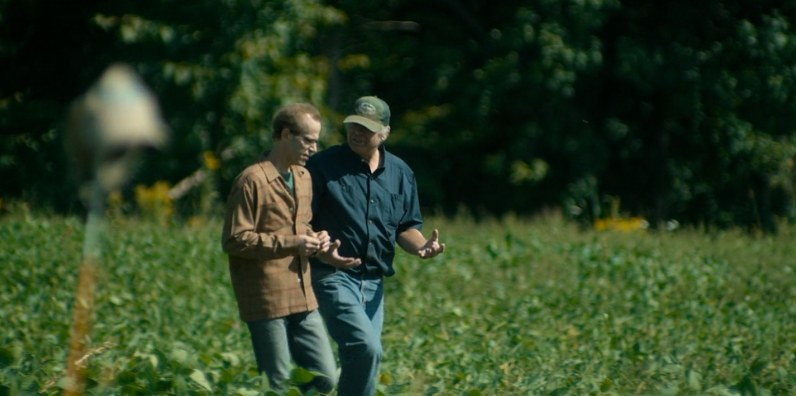
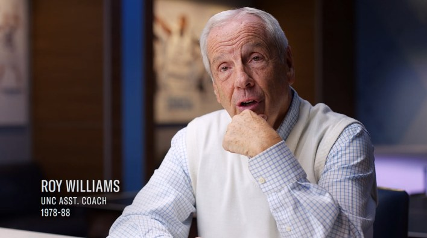
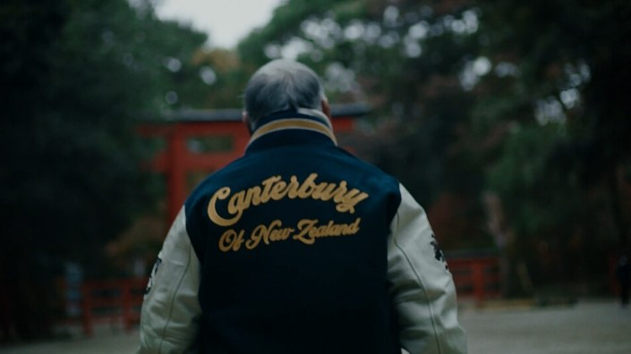

Interior1 persona sentada
La entrevista controlada
- Cámara
- En trípode
- Luz
- Controlada: ventana o equipo
- Sonido
- Silencioso y parejo
- Ritmo
- Pausado, para el relato largo
Reunimos referencias reales de planos, luz, puesta de cámara, recursos y locaciones. Marcá las opciones que te gusten: con tu selección cerramos el plan de rodaje.
Cada imagen es una opción: tocá la tarjeta para marcarla y la lupa para verla en grande. Podés elegir varias por bloque. Tu selección se guarda en este navegador mientras la armás. Las imágenes son fotogramas de documentales y piezas publicadas, y fotos de bancos de uso libre, usadas solo como referencia; debajo de cada una figura de dónde sale.
Cada entrevista se resuelve en una de estas tres situaciones. Cambian la cámara, la luz, el sonido y el ritmo de la conversación.



De más abierto a más cerrado. Una entrevista suele combinar un plano para el relato y otro más cerrado para los momentos de emoción.
La misma entrevista, con el lugar como fondo.
Lo que suma y lo que exige el sonido al aire libre cuando dos personas conversan.
La luz es lo primero que el espectador siente y lo último que nota. Una variante para exterior y dos para interior.
Cuando dos personas caminan y conversan, la cámara se comporta como un tercero que va con ellos. No interviene: acompaña. Según dónde se ubique, cambia lo que siente el espectador.
Vista desde arriba. Las dos personas caminan hacia la derecha; la cámara las sigue desde una de estas tres posiciones.
Cuatro puestas con una sola cámara y una opción con dos cámaras para cuando dos personas conversan.
Cada cámara toma a una persona por encima del hombro de la otra. En la edición se alterna entre las dos sin cortar la conversación.
Un documental se arma con dos maneras de filmar. Una ordena el relato; la otra le da vida. El estilo de la pieza depende de cómo se combinan.

La cámara no se mueve: el encuadre, la luz y el sonido están resueltos de antemano. Toda la atención va a lo que dice la persona.

En mano, al hombro o con estabilizador. La cámara sigue a las personas y entra en la acción para captar lo que no se repite.
La cámara fija sostiene el relato y la cámara en movimiento lo ilustra. El ritmo nace de ese ida y vuelta.
Tráilers oficiales en YouTube. Marcá los que tengan el estilo que buscás.
Los recursos son las imágenes que acompañan la voz de los entrevistados. El documental cruza dos mundos: el deporte, donde se forma el liderazgo, y el trabajo diario de las personas en una tienda de moda. Por eso las referencias van de la cancha al salón, al depósito y a las manos que trabajan las prendas.
Manos, objetos, fotos. Cuentan sin palabras.
Cámara baja y cielo de fondo: épica para aperturas y cierres.
La energía del juego y la cámara que acompaña a la persona.
Percheros, prendas y el trabajo de quienes arman la tienda todos los días.
Pasillos, estanterías y control: la escala y el orden que no se ven desde el salón.
Doblar, alisar, tocar la textura. El oficio contado en primer plano.
Dos opciones de interior y dos de exterior. Podés marcar más de una: cada locación suma algo distinto al relato.
Revisá el resumen, sumá lo que quieras aclarar y envianos la selección. Podés quitar cualquier opción desde acá mismo.
Lo que quieras sumar, cambiar o evitar.
El botón abre tu correo con la selección ya escrita: solo falta enviársela a tu contacto de Popcorn. Si no se abre, usá “Copiar selección” y pegala en un mail.
Con las opciones marcadas y tus comentarios.
Volcamos lo elegido en un documento final: planos, luz, puesta de cámara, recursos y locaciones.
Recorremos las locaciones, escuchamos el lugar y armamos el plan de rodaje con el equipo técnico.
Llegamos al set con cada decisión tomada, para que el día de rodaje se dedique a las personas.
¿Dudas sobre alguna referencia? La vemos juntos antes del rodaje.
Volver a mi selección